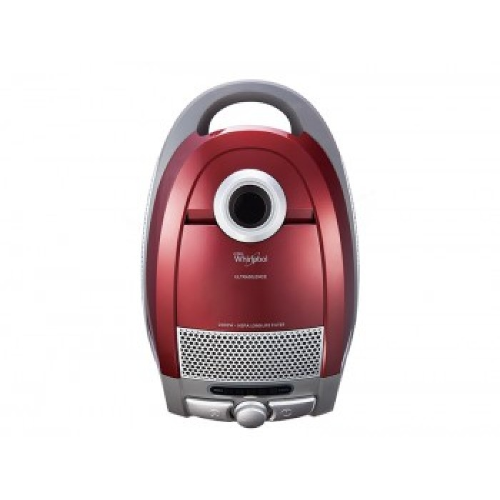

Max. power input 1400 W
• Nominal power input 1280 W
• Suction power 250 W
• Noise level: < 69dB
• Aluminium telescopic tube
• Washable inflow microfilter
• Washable outflow microfilter
• Automatic cord winding
• Electronically controlled suction power
• Universal floor nozzle with an extensible brush